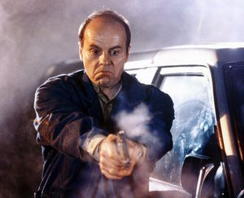

Michael Ironside
 De: La Frikipedia, la enciclopedia extremadamente seria.
De: La Frikipedia, la enciclopedia extremadamente seria.

|
ATENCIÓN
Este artículo es un truño, es sólo un esbozo de un artículo o es demasiado corto o el que lo ha escrito se cree que esto es un vil diccionario. Su autor puede estar bajo los efectos del alcohol o ser un inútil. Quizá haya pistas en la discusión. ¡Mejora la Frikipedia ampliando y mejorando el artículo!
|
 Michael haciendo de
malo bueno en
V.
Famosísimo actor secundario norteamericano, cuya marca de la casa es su desmesurada tendencia a perder miembros.
Inicios
Antes de ser famoso, el pequeño Michael llevaba gafas de pasta e interpretaba sin cesar a Molière y los hermanos Quintero en teatros serios de Wisconsin. Su vida cambió tras ser "estrella invitada" en la teleserie V, donde hacía de malo.
¿Ein?
¡Ah, es cierto, nuestro héroe no hacía de malo! No, amigos; hacía de bueno. De hecho fue el que inventó las temibles balas de teflón, única manera conocida de cargarse a los lagartos. Tenía mala hostia, eso sí.
Bueno, sigamos
Tras este papelazo, donde por fin consiguió salir en los títulos de crédito, el único e incomparable empezó un carrerón que incluía los siguientes papeles (indicamos entre paréntesis el número de miembros perdidos, y la forma).
- Malo de V: ¡y dale!, que era bueno, joder. 0 miembros, o eso se nos hizo creer.
- El equipo A: un gran papel como malo; ahora sí y no lo ibas a decir, ¿no? 0 miembros otra vez.
- Scanners: ni recuerdo de qué hace, sólo que le revienta la cabesa. 1 miembro, la cabeza en una auto-explosión.
- Extreme Prejudice: curiosamente, hace de semi-malo. Aquí pierde todo tipo de miembros en un tiroteo salvaje.
- Starship Troopers: el teniente cabronazo que luego es enrollao. 1 miembro, no dicen cómo lo pierde, ya sale manco.
- Desafío total: otra vez de malo, este hombre es una veleta. No pierde nada.
- Los inmortales: uno de los que mueren porque, según decían todo el rato, "sólo puede quedar uno". 1 miembro, de nuevo la cabeza; de un tajo limpio.
- El maquinista: colega enrollao de la fábrica. 1 miembro, brazo triturado por el maquinista; recordemos su famoso: "¿Qué dices, tío? ¡Estoy de puta madre, el seguro me ha pagado una pasta!".
- Robocop: sí, ya, aquí no sale; pero ¿sabías que, según IMDb, estuvo a punto de hacer de Oficial Murphy? ¡Habría perdido todos los miembros, para verlos sustituidos por piezas mecánicas! Lamentablemente este empujón a su carrera se perdió por su enclenque constitución.
¿Sabías que...
- ... Al principio tenía pelo?
- ... A veces lleva perilla?
- ... Sufrió de fimosis hasta los 45 años?
- ... Le gusta el sexo bizarro con enanas mutiladas, pero por motivos médicos no lo practica tanto como le gustaría?
Autor(es):
- Doctor grijander
- Alex2610
- Epikurolibre
- Mad Max
- Anticristo2007
Frikipedia 2005-2016, Licencia
GFDL 1.2 - Extraído por FrikiLeaks